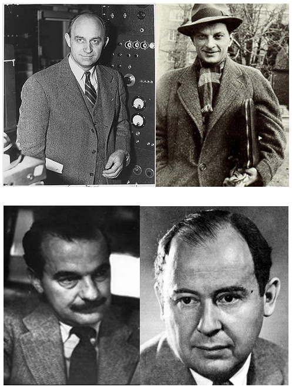

AlphaGo相关技术：蒙特卡罗方法简介
蒙特卡罗(Monte Carlo)方法，也称为计算机随机模拟方法，是一种基于”随机数”的计算方法。
一、起源
这一方法源于美国在第二次世界大战进研制原子弹的”曼哈顿计划”。Monte Carlo方法创始人主要是这四位：Stanislaw Marcin Ulam、Enrico Fermi、John von Neumann（学计算机的肯定都认识这个牛人吧）和 Nicholas Metropolis。

- Stanislaw Marcin Ulam是波兰裔美籍数学家，早年是研究拓扑的，后因参与曼哈顿工程，兴趣遂转向应用数学，他首先提出用Monte Carlo方法解决计算数学中的一些问题，然后又将其应用到解决链式反应的理论中去，可以说是MC方法的奠基人；
- Enrico Fermi是个物理大牛，理论和实验同时都是大牛，这在物理界很少见，在“物理大牛的八卦”那篇文章里提到这个人很多次，对于这么牛的人只能是英年早逝了（别说我嘴损啊，上帝都嫉妒！）；
- John von Neumann（冯·诺依曼）可以说是计算机界的牛顿吧，太牛了，结果和Fermi一样，被上帝嫉妒了；
- Nicholas Metropolis，希腊裔美籍数学家，物理学家，计算机科学家，这个人对Monte Carlo方法做的贡献相当大，正式由于他提出的一种什么算法（名字忘了），才使得Monte Carlo方法能够得到如此广泛的应用，这人现在还活着，与前几位牛人不同，Metropolis很专一，他一生主要的贡献就是Monte Carlo方法。
蒙特卡罗方法的名字来源于摩纳哥的一个城市蒙地卡罗，该城市以赌博业闻名，而蒙特·卡罗方法正是以概率为基础的方法。与它对应的是确定性算法。
二、解决问题的基本思路
Monte Carlo方法的基本思想很早以前就被人们所发现和利用。早在17世纪，人们就知道用事件发生的”频率”来决定事件的”概率”。19世纪人们用投针试验的方法来决定圆周率π。本世纪40年代电子计算机的出现，特别是近年来高速电子计算机的出现，使得用数学方法在计算机上大量、快速地模拟这样的试验成为可能。
为了说明Monte Carlo方法的基本思想，让我们先来看一个简单的例子，从此例中你可以感受如何用Monte Carlo方法考虑问题。
例1:比如y=x^2(对x)从0积到1。结果就是下图红色部分的面积：

注意到函数在(1,1)点的取值为1，所以整个红色区域在一个面积为1的正方形里面。所以所求区域的面积即为 在正方形区域内任取点，点落在所求区域的概率。这个限制条件是y^2。用matlab模拟，做一百万次(即共取1000000个点)，结果为0.3328。
1）总结Monte Carlo方法的基本思想：所求解问题是某随机事件A出现的概率（或者是某随机变量B的期望值）。通过某种“实验”的方法，得出A事件出现的频率，以此估计出A事件出现的概率（或者得到随机变量B的某些数字特征，得出B的期望值）。
2）工作过程
在解决实际问题的时候应用蒙特卡罗方法主要有两部分工作：
- 用蒙特卡罗方法模拟某一过程时，需要产生各种概率分布的随机变量。
- 用统计方法把模型的数字特征估计出来，从而得到实际问题的数值解。
3）蒙特卡罗解题三个主要步骤：
① 构造或描述概率过程： 对于本身就具有随机性质的问题，如粒子输运问题，主要是正确描述和模拟这个概率过程，对于本来不是随机性质的确定性问题，比如计算定积分，就必须事先构造一个人为的概率过程，它的某些参量正好是所要求问题的解。即要将不具有随机性质的问题转化为随机性质的问题。
② 实现从已知概率分布抽样： 构造了概率模型以后，由于各种概率模型都可以看作是由各种各样的概率分布构成的，因此产生已知概率分布的随机变量（或随机向量），就成为实现蒙特卡罗方法模拟实验的基本手段，这也是蒙特卡罗方法被称为随机抽样的原因。最简单、最基本、最重要的一个概率分布是(0,1)上的均匀分布（或称矩形分布）。随机数就是具有这种均匀分布的随机变量。随机数序列就是具有这种分布的总体的一个简单子样，也就是一个具有这种分布的相互独立的随机变数序列。产生随机数的问题，就是从这个分布的抽样问题。在计算机上，可以用物理方法产生随机数，但价格昂贵，不能重复，使用不便。另一种方法是用数学递推公式产生。这样产生的序列，与真正的随机数序列不同，所以称为伪随机数，或伪随机数序列。不过，经过多种统计检验表明，它与真正的随机数，或随机数序列具有相近的性质，因此可把它作为真正的随机数来使用。由已知分布随机抽样有各种方法，与从(0,1)上均匀分布抽样不同，这些方法都是借助于随机序列来实现的，也就是说，都是以产生随机数为前提的。由此可见，随机数是我们实现蒙特卡罗模拟的基本工具。 建立各种估计量： 一般说来，构造了概率模型并能从中抽样后，即实现模拟实验后，我们就要确定一个随机变量，作为所要求的问题的解，我们称它为无偏估计。
③ 建立各种估计量，相当于对模拟实验的结果进行考察和登记，从中得到问题的解。 例如：检验产品的正品率问题，我们可以用1表示正品，0表示次品，于是对每个产品检验可以定义如下的随机变数Ti，作为正品率的估计量： 于是，在N次实验后，正品个数为： 显然，正品率p为： 不难看出，Ti为无偏估计。当然，还可以引入其它类型的估计，如最大似然估计，渐进有偏估计等。但是，在蒙特卡罗计算中，使用最多的是无偏估计。 用比较抽象的概率语言描述蒙特卡罗方法解题的手续如下：构造一个概率空间(W ,A,P)，其中，W 是一个事件集合，A是集合W 的子集的s 体，P是在A上建立的某个概率测度；在这个概率空间中，选取一个随机变量q (w ),w Î W ,使得这个随机变量的期望值 正好是所要求的解Q ，然后用q (w )的简单子样的算术平均值作为Q 的近似值。
三、本方法特点
直接追踪粒子，物理思路清晰，易于理解。
- 采用随机抽样的方法，较真切的模拟粒子输运的过程，反映了统计涨落的规律。
- 不受系统多维、多因素等复杂性的限制，是解决复杂系统粒子输运问题的好方法。
- MC程序结构清晰简单。
- 研究人员采用MC方法编写程序来解决粒子输运问题，比较容易得到自己想得到的任意中间结果，应用灵活性强。
- MC方法主要弱点是收敛速度较慢和误差的概率性质，其概率误差正比于，如果单纯以增大抽样粒子个数N来减小误差，就要增加很大的计算量。
另一类形式与Monte Carlo方法相似，但理论基础不同的方法-”拟蒙特卡罗方法”(Quasi-Monte Carlo方法)-近年来也获得迅速发展。我国数学家华罗庚、王元提出的”华-王”方法即是其中的一例。这种方法的基本思想是”用确定性的超均匀分布序列(数学上称为Low Discrepancy Sequences)代替Monte Carlo方法中的随机数序列。对某些问题该方法的实际速度一般可比Monte Carlo方法提出高数百倍，并可计算精确度。
蒙特卡罗方法在金融工程学，宏观经济学，计算物理学(如粒子输运计算、量子热力学计算、空气动力学计算)等领域应用广泛。
四、Monte Carlo方法的计算程序
关于蒙特卡罗方法的计算程序已经有很多，如：EGS4、FLUKA、ETRAN、ITS、MCNP、GEANT等。这些程序大多经过了多年的发展，花费了几百人年的工作量。除欧洲核子研究中心（CERN）发行的GEANT主要用于高能物理探测器响应和粒子径迹的模拟外，其它程序都深入到低能领域，并被广泛应用。就电子和光子输运的模拟而言，这些程序可被分为两个系列：
- EGS4、FLUKA、GRANT
- ETRAN、ITS、MCNP 这两个系列的区别在于：对于电子输运过程的模拟根据不同的理论采用了不同的算法。
EGS4和ETRAN分别为两个系列的基础，其它程序都采用了它们的核心算法。
ETRAN(for Electron Transport)由美国国家标准局辐射研究中心开发，主要模拟光子和电子，能量范围可从1KeV到1GeV。
ITS(The integrated TIGER Series of Coupled Electron/Photon Monte Carlo Transport Codes )是由美国圣地亚哥（Sandia）国家实验室在ETRAN的基础上开发的一系列模拟计算程序，包括TIGER 、CYLTRAN 、ACCEPT等，它们的主要差别在于几何模型的不同。
TIGER研究的是一维多层的问题，CYLTRAN研究的是粒子在圆柱形介质中的输运问题，ACCEPT是解决粒子在三维空间输运的通用程序。
NCNP(Monte Carlo Neutron and Photo Transport Code)由美国橡树林国家实验室(Oak Ridge National Laboratory)开发的一套模拟中子、光子和电子在物质中输运过程的通用MC 计算程序，在它早期的版本中并不包含对电子输运过程的模拟，只模拟中子和光子，较新的版本（如MCNP4A）则引进了ETRAN，加入了对电子的模拟。
FLUKA 是一个可以模拟包括中子、电子、光子和质子等30余种粒子的大型MC计算程序，它把EGS4容纳进来以完成对光子和电子输运过程的模拟，并且对低能电子的输运算法进行了改进。
五、Monte Carlo方法相关的一些资料
- 一个网站：http://csep1.phy.ornl.gov/mc/mc.html
- 《蒙特卡罗方法》 徐钟济著 上海科学技术出版社
- 《科学计算中的蒙特卡罗策略》(当代科学前沿论丛)(Monte Carlo Strategies in Scientific Computing) 作者:刘军 译者:唐年胜 周勇 徐亮
- 统计物理学中的蒙特卡罗模拟方法 ( 德) 宾德(Binder,K.),赫尔曼(Heermann,D.W.) 著 北京大学出版社 1994.2
- 小尺寸半导体器件的蒙特卡罗模拟 叶良修编著 科学出版社 1997.2
- 蒙特卡罗方法及其在粒子输运问题中的应用 裴鹿成, 张孝泽著 科学出版社 1980.10
- 统计试验法:( 蒙特卡罗法) 及其在电子数字计算机上的实现 (苏) 布斯连科( Н. П. Бусленко), (苏) 施 上海科学技术出版社
- 若干本书：人大经济论坛http://www.pinggu.org/bbs/thread-445802-1-1.html
- 高分子科学中的Monte Carlo方法 杨玉良 复旦大学出版社 1993.12 7-309-01361-1
- Monte Carlo simulation of semiconductor devices C. Moglestue. Chapman & Hall， 1993. 041247770X
- Monte Carlo methods in statistical physics with contributions by K. Binder … [et al.] ; edi Springer-Verlag, 1979.
- guide to Monte Carlo simulations in statistical physics David P. Landau, Kurt Binder. Cambridge University Press, c2000.
- Monte Carlo methods in statistical physics edited by K. Binder ; with contributions by K. Bin Springer-Verlag, c1986.
- Applications of the Monte Carlo method in statistical physics edited by K. Binder. Springer, 1984.
- Monte Carlo Device Simulation Karl Hess Kluwer Acadmic
参考资料：
1、http://baike.baidu.com/view/1675475.htm?fr=ala0_1
2、http://baike.baidu.com/view/42460.htm?fr=ala0_1_1
3、http://gorilla.blogbus.com/logs/4669.html
4、http://blog.sina.com.cn/s/blog_5e8154170100cgc4.html
5、http://www.charlesgao.com/?p=121

可能感兴趣的话题


业界热点资讯更多 »

微软为智能魔戒申请专利 提升Hololens操控感
12 小时前 · 2

微软开发holoportation新技术：用HoloLens实现全息通讯
1 天前 · 4

比特币的新竞争对手Ethereum
17 小时前 · 2

微软Build 2016前瞻：让开发者编写能畅行所有设备的app
21 小时前 · 2 · 1

期待吗？阿尔法狗确认将与人类对战《星际争霸2》
1 天前 · 3 · 1

精选工具资源更多资源 »


最新评论
 Re: 地图匹配算法实践我这边需要研究一下车辆轨迹匹配到道路上，能给程序参考下吗？135792qaqa@163.com
Re: 地图匹配算法实践我这边需要研究一下车辆轨迹匹配到道路上，能给程序参考下吗？135792qaqa@163.com- 提前把两个串用特殊字符拼接后作为搜索串更快
- Re: C++11带来的优雅语法棒棒哒
- Re: 地图匹配算法实践作者，您好，我最近研究GPS数据可视化，正在研究地图匹配部分，您能把代码发我参考一下吗，3Q。。邮箱...
- Re: 程序员编写技术文档的新手指南有时候项目太赶都来不及写文档。做完又接着下一个项目.
- 画出来的图，能干什么呢？来点实用的，好不好。
 Re: C++11带来的优雅语法C++已死
Re: C++11带来的优雅语法C++已死 op=opener.open(url,postData)urllib.error.HTTPError...
op=opener.open(url,postData)urllib.error.HTTPError...
关于伯乐在线博客
在这个信息爆炸的时代，人们已然被大量、快速并且简短的信息所包围。然而，我们相信：过多“快餐”式的阅读只会令人“虚胖”，缺乏实质的内涵。伯乐在线博客团队正试图以我们微薄的力量，把优秀的原创/译文分享给读者，做一个小而精的精选博客，为“快餐”添加一些“营养”元素。
关注我们


合作联系
Email：bd@Jobbole.com
QQ： 2302462408 （加好友请注明来意）